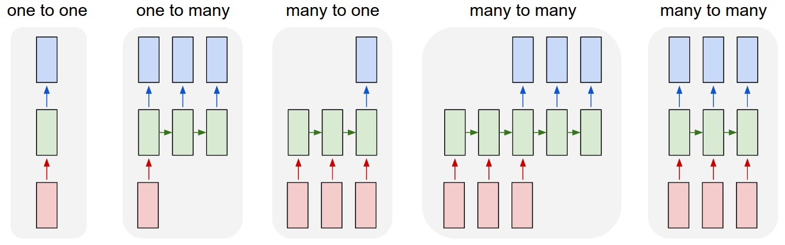

Recurrent neural networks
Lviv University
Recurrent neural networks
Uses
- Language Modelling and Generating Text
- Speech Recognition
- Generating Image Descriptions
- Video Tagging
Recurrent neural networks
Recurrent networks operate on sequences of vectors
Recurrent neural networks
Interpretation
RNNs combine the input vector with their state vector with a fixed (but learned) function to produce a new state vector.
This can in programming terms be interpreted as running a fixed program with certain inputs and some internal variables.
Viewed this way, RNNs essentially describe programs and are Turing-complete.
RNNs as programs
If training vanilla neural nets is optimization over functions, training recurrent nets is optimization over programs.
Recurrent neural networks
Cycles
- feedforward networks – no cycles
- RNN has cycles and transmits information back into itself.
- cycles are recurrent connections
Connection types
- standard connections: applied synchronously to propagate each layer’s activations to the subsequent layer at the same time step
- recurrent connections: dynamic, passing information across adjacent time steps
While Feedforward Networks pass information through the network without cycles, recurrent networks have cycles. This enables them to extend the functionality of Feedforward Networks to also take into account previous inputs \(\boldsymbol{X}_{0:t-1}\) and not only the current input \(\boldsymbol{X}_t\).
Recurrent neural networks
Recurrent neural networks
Recurrent neural networks
Notation
- \(n\) – number of samples
- \(d\) – number of inputs
- \(h\) – number of hidden units
- \(\boldsymbol{H}_t \in \mathbb{R}^{n \times h}\) – hidden state at time \(t\)
- \(\boldsymbol{X}_t \in \mathbb{R}^{n \times d}\) – input at time \(t\)
- \(\boldsymbol{W}_{xh} \in \mathbb{R}^{d \times h}\) – weight matrix
- \(\boldsymbol{W}_{hh} \in \mathbb{R}^{h \times h}\) – hidden-state-to-hidden-state matrix
- \(\boldsymbol{b}_h \in \mathbb{R}^{1 \times h}\) – bias parameter
- \(\phi\) – activation function (usually sigmoid or tanh)
Recurrent neural networks
Note, that here the option of having multiple hidden layers is aggregated to one Hidden Layer block \(\boldsymbol{H}\). This block can obviously be extended to multiple hidden layers.
Recurrent neural networks
Equation for hidden variable
\[ \label{hidden_var} \boldsymbol{H}_t = \phi_h \left(\boldsymbol{X}_t \boldsymbol{W}_{xh} + \boldsymbol{H}_{t-1} \boldsymbol{W}_{hh} + \boldsymbol{b}_h\right) \]
Equation for output variable
\[ \label{output_var} \boldsymbol{O}_t = \phi_o \left(\boldsymbol{H}_t \boldsymbol{W}_{ho} + \boldsymbol{b}_o\right) \] Since \(\boldsymbol{H}_t\) recursively includes \(\boldsymbol{H}_{t-1}\) and this process occurs for every time step the RNN includes traces of all hidden states that preceded \(\boldsymbol{H}_{t-1}\) as well as \(\boldsymbol{H}_{t-1}\) itself.
Recurrent neural networks
Computation for hidden variable
\[ \label{hidden_var_computation} \boldsymbol{H} = \phi_h \left(\boldsymbol{X} \boldsymbol{W}_{xh} + \boldsymbol{b}_h\right) \]
Computation for output variable
\[ \label{output_var_computation} \boldsymbol{O} = \phi_o \left(\boldsymbol{H} \boldsymbol{W}_{ho} + \boldsymbol{b}_o\right) \]
Recurrent neural networks
Hidden state computation
At any time step \(t\):
- concatenate the input \(\boldsymbol{X}_t\) at the current time step \(t\) and the hidden state \(\boldsymbol{H}_{t-1}\) at the previous time step \(t\)
- feed the concatenation result into a fully connected layer with the activation function \(\phi\)
- The output of such a fully connected layer is the hidden state \(\boldsymbol{H}_t\) of the current time step \(t\)
- the model parameters are the concatenation of \(\boldsymbol{W}_{xh}\) and \(\boldsymbol{W}_{hh}\) and a bias \(\boldsymbol{b}_h\)
- \(\boldsymbol{H}_t\) will participate in computing the hidden state \(\boldsymbol{H}_{t+1}\) of the next time step \(t+1\)
- \(\boldsymbol{H}_t\) will also be fed into the fully connected output layer to compute the output \(\boldsymbol{O}_t\) of the current time step \(t\)
Recurrent neural networks

Recurrent neural networks
Language modeling
We aim to predict the next token based on the current and past tokens; thus we shift the original sequence by one token as the targets (labels).
Bengio et al. (2003) first proposed to use a neural network for language modeling.
Recurrent neural networks
A character-level language model based on the RNN. The input and target sequences are “machin” and “achine”, respectively.
Recurrent neural networks
Process
During the training process, we run a softmax operation on the output from the output layer for each time step, and then use the cross-entropy loss to compute the error between the model output and the target.
Because of the recurrent computation of the hidden state in the hidden layer, the output \(\boldsymbol{O}_3\) of time step 3 is determined by the text sequence “m”, “a”, and “c”. Since the next character of the sequence in the training data is “h”, the loss of time step 3 will depend on the probability distribution of the next character generated based on the feature sequence “m”, “a”, “c” and the target “h” of this time step.
Note
In practice, each token is represented by a \(d\)-dimensional vector, and we use a batch size \(n\). Therefore, the input \(\boldsymbol{X}_t\) at time step \(t\) will be an \(n \times d\) matrix.
Backpropagation in RNNs
Backpropagation in RNNs
Backpropagation Through Time (BPTT)
- BPTT expands (or unrolls) the computational graph of an RNN one time step at a time.
- unrolled RNN is a FF neural network with same parameters appearing at each time step
- The gradient with respect to each parameter must be summed across all places that the parameter occurs in the unrolled net.
Backpropagation in RNNs
Backpropagation Through Time (BPTT)
When we forward pass our input \(\boldsymbol{X}_t\) through the network, we compute the hidden state \(\boldsymbol{H}_t\) and the output state \(\boldsymbol{O}_t\) one step at at time.
We can then define a loss function \(L(\boldsymbol{O}, \boldsymbol{Y})\) to describe the difference between all outputs \(\boldsymbol{O}_t\) and target values \(\boldsymbol{Y}_t\), summing up loss terms \(l_t\).
\[ \label{loss_function} L(\boldsymbol{O}, \boldsymbol{Y}) = \sum\limits_{t=1}^T l_t (\boldsymbol{O}_t, \boldsymbol{Y}_t) \]
Backpropagation in RNNs
Boxes represent variables (not shaded) or parameters (shaded) and circles represent operators.
Backpropagation in RNNs
\[ \notag \frac{\partial L}{\partial \boldsymbol{W}_{ho}} = \sum\limits_{t=1}^T \frac{\partial l_t}{\partial \boldsymbol{O}_t}\cdot\frac{\partial \boldsymbol{O}_t}{\partial \phi_o} \cdot \frac{\partial \phi_o}{\partial \boldsymbol{W}_{ho}} = \\ \label{loss_function_derivative1} = \sum\limits_{t=1}^T \frac{\partial l_t}{\partial \boldsymbol{O}_t} \cdot \frac{\partial \boldsymbol{O}_t}{\partial \phi_o} \boldsymbol{H}_t. \]
Backpropagation in RNNs
\[ \label{loss_function_derivative2} \frac{\partial L}{\partial \boldsymbol{W}_{hh}} = \sum\limits_{t=1}^T \frac{\partial l_t}{\partial \boldsymbol{O}_t}\cdot\frac{\partial \boldsymbol{O}_t}{\partial \phi_o} \cdot \frac{\partial \phi_o}{\boldsymbol{H}_t} \cdot \frac{\partial \boldsymbol{H}_t}{\partial \phi_h} \cdot \frac{\partial \phi_h}{\partial \boldsymbol{W}_{hh}}= \\ = \sum\limits_{t=1}^T \frac{\partial l_t}{\partial \boldsymbol{O}_t} \cdot \frac{\partial \boldsymbol{O}_t}{\partial \phi_o} \boldsymbol{W}_{ho} \cdot \frac{\partial \boldsymbol{H}_t}{\partial \phi_h} \cdot \frac{\partial \phi_h}{\partial \boldsymbol{W}_hh}. \]
Backpropagation in RNNs
\[ \label{loss_function_derivative3} \frac{\partial L}{\partial \boldsymbol{W}_{xh}} = \sum\limits_{t=1}^T \frac{\partial l_t}{\partial \boldsymbol{O}_t}\cdot\frac{\partial \boldsymbol{O}_t}{\partial \phi_o} \cdot \frac{\partial \phi_o}{\boldsymbol{H}_t} \cdot \frac{\partial \boldsymbol{H}_t}{\partial \phi_h} \cdot \frac{\partial \phi_h}{\partial \boldsymbol{W}_{xh}}= \\ = \sum\limits_{t=1}^T \frac{\partial l_t}{\partial \boldsymbol{O}_t} \cdot \frac{\partial \boldsymbol{O}_t}{\partial \phi_o} \boldsymbol{W}_{ho} \cdot \frac{\partial \boldsymbol{H}_t}{\partial \phi_h} \cdot \frac{\partial \phi_h}{\partial \boldsymbol{W}_xh}. \]
Backpropagation in RNNs
Since each \(\boldsymbol{H}_t\) depends on the previous time step, we can substitute the last part from above equations to obtain \[ \label{loss_function_derivative4} \frac{\partial L}{\partial \boldsymbol{W}_{hh}} = \sum\limits_{t=1}^T \frac{\partial l_t}{\partial \boldsymbol{O}_t}\cdot\frac{\partial \boldsymbol{O}_t}{\partial \phi_o} \cdot \boldsymbol{W}_{ho} \sum\limits_{k=1}^t \frac{\partial \boldsymbol{H}_t}{\partial \boldsymbol{H}_k}\frac{\partial \boldsymbol{H}_t}{\partial \boldsymbol{W}_{hh}}. \]
\[ \label{loss_function_derivative5} \frac{\partial L}{\partial \boldsymbol{W}_{xh}} = \sum\limits_{t=1}^T \frac{\partial l_t}{\partial \boldsymbol{O}_t}\cdot\frac{\partial \boldsymbol{O}_t}{\partial \phi_o} \cdot \boldsymbol{W}_{ho} \sum\limits_{k=1}^t \frac{\partial \boldsymbol{H}_t}{\partial \boldsymbol{H}_k}\frac{\partial \boldsymbol{H}_t}{\partial \boldsymbol{W}_{xh}}. \]
Backpropagation in RNNs
OR:
\[ \label{loss_function_derivative6} \frac{\partial L}{\partial \boldsymbol{W}_{hh}} = \sum\limits_{t=1}^T \frac{\partial l_t}{\partial \boldsymbol{O}_t}\cdot\frac{\partial \boldsymbol{O}_t}{\partial \phi_o} \cdot \boldsymbol{W}_{ho} \sum\limits_{k=1}^t \left(\boldsymbol{W}^T_{hh}\right)^{t-k} \cdot \boldsymbol{H}_k. \]
\[ \label{loss_function_derivative7} \frac{\partial L}{\partial \boldsymbol{W}_{xh}} = \sum\limits_{t=1}^T \frac{\partial l_t}{\partial \boldsymbol{O}_t}\cdot\frac{\partial \boldsymbol{O}_t}{\partial \phi_o} \cdot \boldsymbol{W}_{ho} \sum\limits_{k=1}^t \left(\boldsymbol{W}^T_{hh}\right)^{t-k} \cdot \boldsymbol{X}_k. \]
Backpropagation in RNNs
A problem
We can see that we need to store powers of \(\boldsymbol{W}_{hh}^k\) as we proceed through each loss term \(l_t\) of the overall loss function \(L\) that can become very large.
For these large values this method becomes numerically unstable since eigenvalues smaller than 1 vanish and eigenvalues larger than 1 diverge.
Solution
Truncate a sum at computationally convenient size - Truncated BPTT.
Backpropagation in RNNs
Truncated BPTT
This establishes an upper bound for the number of time steps the gradient can flow back to.
Interpretation: a moving window of past time steps which the RNN considers. Anything before the cut-off time step doesn’t get taken into account. Since BPTT basically unfolds the RNN to create a new layer for each time step we can also think of this procedure as limiting the number of hidden layers.
Result: model focuses primarily on short-term influence rather than long-term consequences.
LSTMs
LSTMs
Problem
In \(\eqref{loss_function_derivative4}\) and \(\eqref{loss_function_derivative5}\) we see \(\frac{\partial \boldsymbol{H}_t}{\partial \boldsymbol{H}_k}\) that introduces a matrix multiplication over a potentially very long sequence.
Solution
LSTMs were designed to handle a vanishing gradient problem.
Since they use a more constant error, they allow RNNs to learn over a lot more time steps (way over 1000).
LSTMs
Gates
To achieve that, LSTMs store more information outside of the traditional neural network flow in structures called gated cells.
Gate types
- output gate \(\boldsymbol{O}_t\) – reads entries of the cell
- input gate \(\boldsymbol{I}_t\) – reads data into the cell
- forget gate \(\boldsymbol{F}_t\) – resets the content of the cell.
LSTMs
Computations
\[ \label{lstm_computations} \boldsymbol{O}_t = \sigma\left(\boldsymbol{X}_t \boldsymbol{W}_{xo} + \boldsymbol{H}_{t-1} \boldsymbol{W}_{ho} + \boldsymbol{b}_o\right), \\ \boldsymbol{I}_t = \sigma\left(\boldsymbol{X}_t \boldsymbol{W}_{xi} + \boldsymbol{H}_{t-1} \boldsymbol{W}_{hi} + \boldsymbol{b}_i\right), \\ \boldsymbol{F}_t = \sigma\left(\boldsymbol{X}_t \boldsymbol{W}_{xf} + \boldsymbol{H}_{t-1} \boldsymbol{W}_{hf} + \boldsymbol{b}_f\right). \]
Here \(\boldsymbol{W}_{xo}, \boldsymbol{W}_{xi}\boldsymbol{W}_{xf} \in \mathbb{R}^{d \times h}\), and \(\boldsymbol{W}_{ho}, \boldsymbol{W}_{hi}\boldsymbol{W}_{hf} \in \mathbb{R}^{h \times h}\) are weight matrices and \(\boldsymbol{b}_o, \boldsymbol{b}_i, \boldsymbol{b}_f \in \mathbb{R}^{1 \times h}\) are their respective biases.
Further, they use the sigmoid activation function \(\sigma\) to transform the output \(\in (0, 1)\) which each results in a vector with entries \(\in (0, 1)\).
LSTMs
Calculation of input, forget, and output gates in an LSTM
LSTMs
Candidate memory cell
\(\tilde{\boldsymbol{C}}_t \in \mathbb{R}^{n \times h}\) – similar computation as previously mentioned gates but uses tanh to have output \(\in (-1, 1)\).
Has its own weights \(\boldsymbol{W}_{xc} \in \mathbb{R}^{d \times h},\boldsymbol{W}_{hc} \in \mathbb{R}^{h \times h}\) and biases \(\boldsymbol{b}_c \in \mathbb{R}^{1 \times h}\).
Computation
\[ \label{candidate_memory_cell_computation} \tilde{\boldsymbol{C}}_t = tanh \left(\boldsymbol{X}_t \boldsymbol{W}_{xc} + \boldsymbol{H}_{t-1} \boldsymbol{W}_{hc} + \boldsymbol{b}_c\right) \]
LSTMs
Computation of candidate memory cells in LSTM.
LSTMs
Old memory content
To put things together we introduce old memory content \(\boldsymbol{C}_{t−1} \in \mathbb{R}^{n \times h}\) which together with the introduced gates controls how much of the old memory content we want to preserve to get to the new memory content \(\boldsymbol{C}_t\).
Computation
\[ \label{candidate_memory_cell_computation2} \boldsymbol{C}_t = \boldsymbol{F}_t \odot \boldsymbol{C}_{t-1} + \boldsymbol{I}_t \odot \tilde{\boldsymbol{C}}_t. \]
LSTMs
Computation of memory cells in an LSTM.
LSTMs
Hidden states computation
\[ \label{hidden_states_computation} \boldsymbol{H}_t = \boldsymbol{O}_t \odot tanh\left(\boldsymbol{C}_t\right), \; \boldsymbol{H}_t \in \mathbb{R}^{n \times h}. \]
- the output gate is close to 1 – we allow the memory cell internal state to impact the subsequent layers uninhibited,
- the output gate is close to – we prevent the current memory from impacting other layers of the network at the current time step.
Note
A memory cell can accrue information across many time steps without impacting the rest of the network (as long as the output gate takes values close to 0), and then suddenly impact the network at a subsequent time step as soon as the output gate flips from values close to 0 to values close to 1.
LSTMs
Computation of the hidden state in an LSTM.
Gated Recurrent Units
Gated Recurrent Units
Rationale
- simpler architecture
- retain internal state and gating mechanisms
- but speed up computation
Outline
- instead of LSTM’s 3 gates, use 2: reset gate and update gate
- reset gate controls how much of the previous state we want to remember
- update gate controls how much of the new state is just a copy of the old one
Gated Recurrent Units
Computing the reset gate and the update gate in a GRU model.
Gated Recurrent Units
Gate computation
Suppose that for a given time step \(t\) we have:
- a minibatch \(\boldsymbol{X}_t \in \mathbb{R}^{n \times d}\)
- hidden state of the previous time step \(\boldsymbol{H}_{t-1} \in \mathbb{R}^{n \times h}\)
- \(\boldsymbol{W}_{xr}, \boldsymbol{W}_{xz} \in \mathbb{R}^{d \times h}, \; \boldsymbol{W}_{hr}, \boldsymbol{W}_{hz} \in \mathbb{R}^{h \times h}\) are weights
- \(\boldsymbol{b}_r, \boldsymbol{b}_z \in \mathbb{R}^{1 \times h}\) are bias parameters
We compute: \[ \boldsymbol{R}_t = \sigma\left(\boldsymbol{X}_t \boldsymbol{W}_{xr} + \boldsymbol{H}_{t-1}\boldsymbol{W}_{hr} + \boldsymbol{b}_r\right),\\ \boldsymbol{Z}_t = \sigma\left(\boldsymbol{X}_t \boldsymbol{W}_{xz} + \boldsymbol{H}_{t-1}\boldsymbol{W}_{hz} + \boldsymbol{b}_z\right). \]
Gated Recurrent Units
Candidate hidden state at time step \(t\)
Next, we integrate reset gate \(\boldsymbol{R}_t\) with the regular updating mechanism and obtain: \[ \tilde{\boldsymbol{H}}_t = tanh\left(\boldsymbol{X}_t \boldsymbol{W}_{xh} + (\boldsymbol{R}_t \odot \boldsymbol{H}_{t-1}) \boldsymbol{W}_{hh} + \boldsymbol{b}_h\right), \; \tilde{\boldsymbol{H}}_t \in \mathbb{R}^{n\times h} \]
- influence of previous states is reduced with the Hadamard product of \(\boldsymbol{R}_t\) and \(\boldsymbol{H}_{t-1}\)
- entries in \(\boldsymbol{R}_t\) close to 1 – vanilla RNN
- entries in \(\boldsymbol{R}_t\) close to 0 – candidate hidden state is the result of MLP with \(\boldsymbol{X}_t\) as an input
- any pre-existing hidden state is thus reset to defaults.
Gated Recurrent Units
Computing the candidate hidden state in a GRU model.
Gated Recurrent Units
Update gate
Finally, we need to incorporate the effect of the update gate \(\boldsymbol{Z}_t\).
This determines the extent to which the new hidden state \(\boldsymbol{H}_t \in \mathbb{R}^{n \times h}\) matches the old state \(\boldsymbol{H}_{t-1}\) compared with how much it resembles the new candidate state \(\tilde{\boldsymbol{H}}_t\).
The update gate \(\boldsymbol{Z}_t\) can be used for this purpose, simply by taking elementwise convex combinations of \(\boldsymbol{H}_{t-1}\) and \(\tilde{\boldsymbol{H}}_t\).
\[ \boldsymbol{H}_t = \boldsymbol{Z}_t \odot \boldsymbol{H}_{t-1} + (1-\boldsymbol{Z}_t) \odot \tilde{\boldsymbol{H}}_t. \]
- \(\boldsymbol{Z}_t\) close to 1 – retain the old state. In this case the information from \(\boldsymbol{X}_t\) is ignored%, effectively skipping time step \(t\) in the dependency chain.
- \(\boldsymbol{Z}_t\) is close to 0 – the new latent state \(\boldsymbol{H}_t\) approaches the candidate latent state \(\tilde{\boldsymbol{H}}_t\).
Gated Recurrent Units
Computing the hidden state in a GRU model.
Gated Recurrent Units
Summary
- Reset gates help capture short-term dependencies in sequences.
- Update gates help capture long-term dependencies in sequences.
Deep Recurrent Neural Networks
Deep Recurrent Neural Networks
Stacking
To construct a deep RNN with \(L\) hidden layers we simply stack ordinary RNNs of any type on top of each other.
Each hidden state \(\boldsymbol{H}^{(l)}_t \in \mathbb{R}^{n\times h}\) is passed to the next time step of the current layer \(\boldsymbol{H}^{(l)}_{t+1}\) as well as the current time step of the next layer \(\boldsymbol{H}^{(l+1)}_t\).
State computation
\[ \label{drnn_subsequent_state} \boldsymbol{H}^{(l)}_t = \phi_l \left(\boldsymbol{H}^{(l-1)}_t \boldsymbol{W}_{xh}^{(l)} + \boldsymbol{H}_{t-1}^{(l)} \boldsymbol{W}_{hh}^{(l)} + \boldsymbol{b}_h^{(l)}\right), \] where \(\boldsymbol{H}_t^{(0)} = \boldsymbol{X}_t\).
Deep Recurrent Neural Networks
Output computation
\[ \label{drnn_output_computation} \boldsymbol{O}_t = \phi_o \left(\boldsymbol{H}_t^{(L)} \boldsymbol{W}_{ho} + \boldsymbol{b}_o\right), \; \boldsymbol{O}_t \in \mathbb{R}^{n \times o}. \]
Note that we only use the hidden state of layer \(L\).
Deep Recurrent Neural Networks
Architecture of a deep recurrent neural network.
Bidirectional Recurrent Neural Networks
Bidirectional Recurrent Neural Networks
Language modeling example
Based on our current models we are able to reliably predict the next sequence element (i.e. the next word) based on what we have seen so far. However, there scenarios where we might want to fill in a gap in a sentence and the part of the sentence after the gap conveys significant information. This information is necessary to take into account to perform well on this kind of task. On a more generalised level we want to incorporate a look-ahead property for sequences.
- I am
___. - I am
___hungry. - I am
___hungry, and I can eat half a pig.
Bidirectional Recurrent Neural Networks
Description
To achieve this look-ahead property Bidirectional Recurrent Neural Networks (BRNNs) got introduced which basically add another hidden layer which run the sequence backwards starting from the last element.
We simply implement two unidirectional RNN layers chained together in opposite directions and acting on the same input. For the first RNN layer, the first input is \(\boldsymbol{X}_1\) and the last input is \(\boldsymbol{X}_T\), but for the second RNN layer, the first input is \(\boldsymbol{X}_T\) and the last input is \(\boldsymbol{X}_1\).
Bidirectional Recurrent Neural Networks

Architecture of a bidirectional recurrent neural network.
Bidirectional Recurrent Neural Networks
Forward/Backward Hidden States
\[ \label{brnn_forward} \overrightarrow{\boldsymbol{H}}_t = \phi\left(\boldsymbol{X}_t \boldsymbol{W}_{xh}^{(f)} + \overrightarrow{\boldsymbol{H}}_{t-1}\boldsymbol{W}_{hh}^{(f)} + \boldsymbol{b}_h^{(f)}\right),\; \overrightarrow{\boldsymbol{H}}_t \in \mathbb{R}^{n \times h}, \] \[ \label{brnn_backward} \overleftarrow{\boldsymbol{H}}_t = \phi\left(\boldsymbol{X}_t \boldsymbol{W}_{xh}^{(b)} + \overleftarrow{\boldsymbol{H}}_{t+1}\boldsymbol{W}_{hh}^{(b)} + \boldsymbol{b}_h^{(b)}\right), \; \overleftarrow{\boldsymbol{H}}_t \in \mathbb{R}^{n \times h}. \]
Note two sets of hidden matrices and biases: \[ \boldsymbol{W}_{xh}^{(f)},\boldsymbol{W}_{xh}^{(b)} \in \mathbb{R}^{d \times h}, \; \boldsymbol{W}_{hh}^{(f)},\boldsymbol{W}_{hh}^{(b)} \in \mathbb{R}^{h \times h},\\ \boldsymbol{b}_h^{(f)}, \boldsymbol{b}_h^{(b)} \in \mathbb{R}^{1 \times h}. \]
Bidirectional Recurrent Neural Networks
BRNN output
\[ \boldsymbol{O}_t = \phi\left(\left[\overrightarrow{\boldsymbol{H}}_t \frown \overleftarrow{\boldsymbol{H}}_t\right]\boldsymbol{W}_{ho} + \boldsymbol{b}_o\right), \] where \(\frown\) denotes matrix concatenation (stacking them on top of each other).
Weight matrices \(\boldsymbol{W}_{ho} \in \mathbb{R}^{2h\times o}\), bias parameters \(\boldsymbol{b}_o \in \mathbb{R}^{1 \times o}\).
Encoder-Decoder Architecture
Encoder-Decoder Architecture
Description
- network is twofold
- encoder network – encode the (variable-length) input into a state
- decoder network – decode the state into an output
Encoder-Decoder Architecture
seq2seq
Based on this Encoder-Decoder architecture a model called Sequence to Sequence (seq2seq) got proposed for generating a sequence output based on a sequence input. This model uses RNNs for the encoder as well as the decoder where the hidden state of the encoder gets passed to the hidden state of the decoder.
It mainly focuses on mapping a fixed length input sequence of size \(n\) to an fixed length output sequence of size \(m\) where \(n \neq m\) can be true but isn’t a necessity.
Encoder-Decoder Architecture
Seq2seq model
Encoder-Decoder Architecture
Encoder
- RNN accepts a single element of the sequence \(\boldsymbol{X}_t\), \(t\) being order of the sequence element
- these RNNs can be LSTMs or GRUs for performance
- hidden states \(\boldsymbol{H}_t\) are computed according to the definition of hidden states in the used RNN type (LSTM or GRU)
- The Encoder Vector (context) is a representation of the last hidden state of the encoder network which aims to aggregate all information from all previous input elements.
- This functions as initial hidden state of the decoder network of the model and enables the decoder to make accurate predictions.
Encoder-Decoder Architecture
Decoder
- RNN which predicts an output \(\boldsymbol{Y}_t\) at a time step \(t\)
- The produced output is again a sequence where each \(\boldsymbol{Y}_t\) is a sequence element with order \(t\)
- At each time step the RNN accepts a hidden state from the previous unit and itself produces an output as well as a new hidden state.
Encoder-Decoder Architecture
Encoder computation
Encoder transforms the hidden states at all time steps into a context variable \(\boldsymbol{C}\) through a customized function \(q\): \[ \boldsymbol{C} = q\left(\boldsymbol{H}_1, \dots, \boldsymbol{H}_T\right) \]
Decoder computation
Decoder assigns a predicted probability to each possible token occurring at step \(t'+1\) conditioned upon the previous tokens in the target \(y_1, \dots, y_{t'}\) and the context variable \(\boldsymbol{C}\), i.e. \(P(y_{t'+1} | y_1, \dots, y_{t'}, \boldsymbol{C})\).
\[ \boldsymbol{S}_{t'} = g\left(y_{t'-1}, \boldsymbol{C}, \boldsymbol{S}_{t'-1}\right) \]